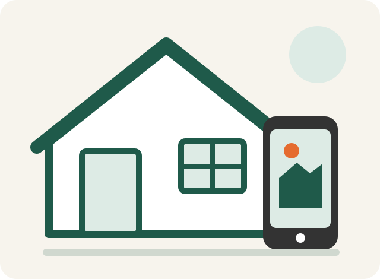

塗装が必要か知りたい
色あせやひびが気になるものの、今すぐ塗るべきか分からない段階からご相談いただけます。
気になる症状を見る栃木県全域対応／重点：那須塩原・大田原・さくら・那須・塩谷
外壁・屋根の写真や、他社から受け取った見積書を現場経験者が確認します。相談だけでも構いません。ご依頼のない訪問や、契約を急がせる対応は行いません。
返信は営業時間内（8:00〜17:00）。写真送信だけで契約にはなりません。

相談入口
色あせやひびが気になるものの、今すぐ塗るべきか分からない段階からご相談いただけます。
気になる症状を見る数量、塗料、下地処理、足場、追加条件など、何が含まれているかを一緒に確認します。
確認する項目を見る住所、希望時期、写真を先に受け取り、必要な確認を整理してから日程をご相談します。
無料見積もりを相談するお約束
飛び込み訪問や、依頼内容と関係のない営業は行いません。
急ぐ必要がないと判断した場合は、その理由もお伝えします。
追加作業が必要な場合は、実施前に内容と金額をご説明します。
連携する職人が施工する場合も、担当・施工範囲・責任者を契約前に説明します。
塗装サービス
外壁の状態、下地、ひび、コーキングなどを確認し、施工範囲を整理します。
屋根材や劣化状態によって、塗装が適しているかを現地確認後に判断します。
雨樋、軒天、破風、鉄部など、住宅の状態に応じて確認します。
小さな範囲も状態を確認し、必要な施工内容をご案内します。
ご相談の流れ
施工体制
代表は塗装職人として現場に携わった経験があります。外壁や屋根の状態、見積内容、施工方法を現場経験者の視点で確認します。
協力職人が施工する場合も、正式契約前に施工担当、範囲、責任者をご説明し、工程写真で作業内容を確認できる形にします。
代表・事業者情報を見る代表・協力職人には、住宅塗装のほか、橋梁、公共施設、病院、住宅メーカー関連、歴史的建造物などの現場に携わった経験があります。これらは屋号として直接受注した実績ではなく、各人の過去の現場経験を含みます。
暮らしサポート
草刈り、清掃、空き家確認、片付け、家庭ごみ・不用品・廃品の回収、再使用品や金・銀・プラチナの買取、車・バイクの回収・引取りなどをご相談いただけます。
暮らしサポートの内容を見るよくある質問
無料相談
電話が苦手な方は、LINE又はフォームをご利用ください。LINEとフォームは24時間受付、返信は営業時間内です。